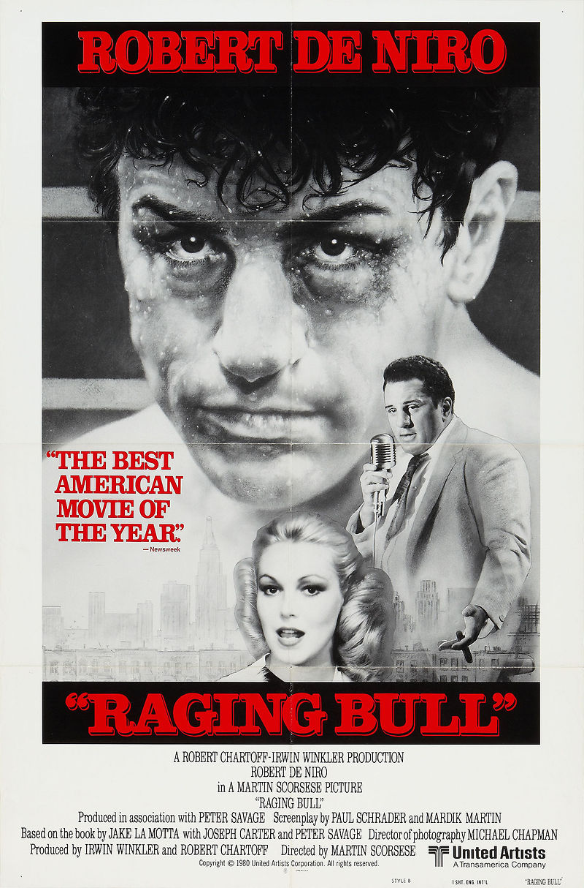

| Categories |
2000 |
1980 |
| Posters |
 |
 |
| Title |
Jarhead |
Raging Bull |
| Director |
Sam Mendes |
Martin Scorsese |
| Producer(s) |
Douglas Wick, Lucy Fisher |
Irwin Winkler, Robert Chartoff |
| Writer(s) |
William Broyles, Jr. |
Paul Schrader Mardik Martin |
| Actors |
Jake Gyllenhaal, Peter Sarsgaard, Chris Coooper, Jamie Foxx |
Robert De Niro, Joe Pesci, Cathy Moriarty |
| Cinematographer |
Roger Deakins |
Michael Chapman |
| Description |
In the late 1980s, Anthony Swofford (Jake Gyllenhaal) enlists as a Marine, training in boot camp under a sadistic drill instructor. Swofford undertakes a sniper course headed by Staff Sgt. Sykes (Jamie Foxx) during this time, which is shortly before the advent of the Gulf War. When the United States becomes involved, Swofford is shipped out, along with his spotter, Alan Troy (Peter Sarsgaard). Facing uncertainty each day -- about the war and home -- the soldiers try to maintain composure. |
The story of a middleweight boxer as he rises through ranks to earn his first shot at the middleweight crown. He falls in love with a gorgeous girl from the Bronx. The inability to express his feelings enters into the ring and eventually takes over his life. He eventually is sent into a downward spiral that costs him everything. |
| Release Date |
November 4th, 2005 |
December 19th, 1980 |